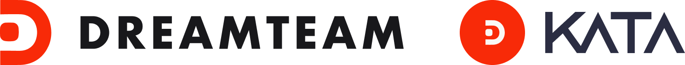
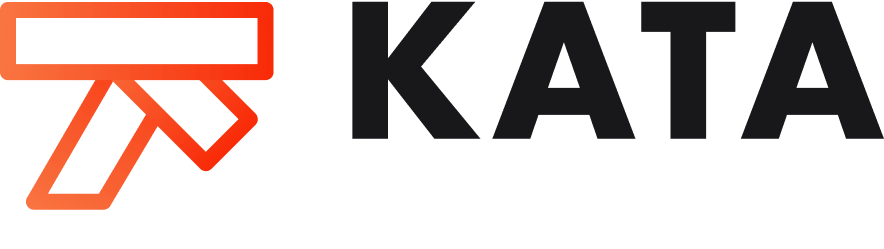

PROBLEM
New Brand Identity
There was confusion surrounding the difference between our product KATA and the company DreamTeam, based on feedback from customers and investors. To avoid further friction, we decided to focus more on our KATA brand identity, and to start, we needed a logo.

RESEARCH
Mixing Old and New
The DreamTeam brand attributes were: elevated, inspiration, intelligent, transparent and focused, and we wanted to incorporate those into the new KATA brand. We also aimed to connect the brand with the meaning of KATA, which is a Japanese word for ‘form,’ associated with a choreographed pattern of martial art movements, and to introduce elements of the actual product, which enhance visibility and status within software development projects and teams.
DESIGN
Expand and Simplify
One concept that stood out during research was the karate belt; when tied, the overlapping elements complemented the fluid nature of software development. The belt illustration also resembled a ‘K’ and formed an arrow with the negative space. The final iteration aimed to simplify and draw attention to the focus and progress aspects of project management. Iterations of the karate belt.
